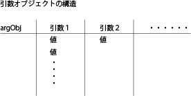

操作の組み込み
gittok ではGitHubを通じてソースプログラムを含むリソースを公開しているので，GPLライセンスの範囲で，ユーザは自由に操作のプログラムを作成し，gittok に組み込むことができます．ここでは，gittok がどのように，操作を実行しているか，解説します．ただしこの節は，Flush Builder とactionscript 3.0 によるプログラム開発経験がある方を，読者として想定しています．
操作の実行手順
以下，Analyst.mxml に含まれる，操作を実行する関数 executeButton_clickHandler の処理手順を，概説します．ソースリストを手元において，以下の説明をお読み下さい．
1. 操作型リストから，該当する 操作の型 (OperationType) を選択する．応用スキーマ中の地物型または関連型がもつ操作型のリストを「操作型リスト」という．executeButton_clickHandler が実行される前に，どの操作を実行するか，Analystの中で指定しなければいけない．
2. 操作型から型名を取り出し，geoOperations. ＋ 操作クラス名を，操作クラス名とする．ここでgeoOperationsは，操作クラスが入っているフォルダーである．
3. この操作クラスの名前をキーとして，flash.utilにあるにgetDefinitionByName関数を使って classRefを取り出す．ちなみにclassRefは，操作の名前をキーにして操作を特定する object である．
4.1. 地物の操作を実行する場合は，操作型から，使用する引数の組を取り出し，それを使って，地物インスタンスから，引数になる属性値を選択し，引数の型をキーとする引数辞書 argObj を作成する．辞書とはこの場合辞書型 (Dictionary)をとるという意味であり，辞書型は一般に連想配列と言われる．
4.2. 関連の操作を実行する場合は，from 地物. to 地物，及び／又は関連インスタンス自身から，操作に使われる引数を取り出し，引数型の名前をキーとする引数辞書 argObj を作成する．
引数辞書 argObj の構造は以下のとおりである．
キー：引数型の名
値：属性値の配列リスト (ArrayList)
属性値：任意の型をとる値
ここで，属性値自体が配列リストになることがある点に留意すべきである．これは，属性に多重度が設定された場合におきる．では，その属性値の配列リストとはどのようなものであろうか．地物は関連を通じて，別の，一つ以上のto地物のインスタンスの属性値を参照することができる．そしてその参照に多重度が設定されている場合がある．そのような時は，地物は属性値の配列リストを持ち，属性値も配列リストになることがある．gittok では，そのような状況を考えて，引数は配列リストの配列リスト，という構造にしている．
4.3. 操作が距離や面積等，計測単位をもつ値を求める場合を想定し，地図座標を地上の平面座標に変換する affine parametersを引数に入れる．そのとき，引数の型は "affineParam"である．
5. 操作参照クラス classRef にキーとなる操作名と，引数辞書を与えて，操作を実行させる．戻り値は，多重度が複数に設定されている場合は，ArrayListになる．単数の場合でも，要素が一つだけのArrayListにする．
6. 戻り値は，以下の４つの場合に分けて，地物や関連の派生属性になる．
6.1. 地物の操作で地物自身の属性に成る場合
6.2. 地物の操作で，リンクするto-地物の属性になる場合
6.3. 関連の操作で，from 地物の属性になる場合
6.4. 関連の操作で，to 地物の属性になる場合
6.5. 関連の操作で，関連自身の属性になる場合
操作の組み込み
操作とは
操作とは，ユーザの要求に応じて地物または関連が働いて，その時点で未定の属性値を求める行為である．これをgittokで行うためには，規則に従った引数と戻り値が定義されたプログラムを，Actionscript 3.0 で作成し，gittokに組み込む．
操作クラス
操作は操作クラスに含まれる関数（クラスメソッド）である．例えば，中心を求める操作クラスには，点群，線，面の重心や，凹な面の内部に合理的な中心を求める操作などが含まれる．
操作クラスは，geoOperationsパッケージの中のクラスとして宣言する．例えば，gittokの中で，中心を求める操作クラス (Center) は，以下のように宣言されている．
package geoOperations
{
import dataTypes.spatialGeometry.*;
import mx.collections.ArrayList;
public class Center
{
…………………
}
}
操作の宣言
操作は，gittokでは，スタティックな関数として宣言し，インスタンスを作らなくても実行できるようにする．例えば点群を引数にして重心を求める操作 (centerOfPoints) は，以下の様に表現できる．プログラムの大まかな構造（引数を受け取り，処理をおこない，戻り値を返す）をみてほしい．ここで注意すべきは，この操作は，一つの地物インスタンスがもつ点群の重心を求めることを想定している，ということである．argObjの構造は，既に述べたように２重の配列リストにしなければいけない．そこで，この例では，２重にはするものの，pointValuesの最初の要素しか使わないようにしている．
package geoOperations
{
import dataTypes.spatialGeometry.*;
import mx.collections.ArrayList;
public class Center
{
………………………………….
public static function centerOfPoints(argObj:Object):SG_Point {
var points:ArrayList = new ArrayList();
var pointValues:ArrayList = argObj["points"] as ArrayList;
points.addAll(pointValues.getItemAt(0) as ArrayList);
var wp:SG_Point = points.getItemAt(0) as SG_Point;
var m:int = points.length;
if (m == 0) return null;
var x:Number = 0;
var y:Number = 0;
var coord:Coordinate2;
for (var i:int = 0; i < m; i++) {
wp = points.getItemAt(i) as SG_Point;
coord = wp.position;
x += coord.x;
y += coord.y;
}
var p:SG_Point = new SG_Point;
p.featureID = wp.featureID;
p.attributeName = wp.attributeName;
p.position.x = x/m;
p.position.y = y/m;
return p;
}
…………………………………
}
}
地上座標への変換
戻り値が長さや面積など，計測単位を持つ場合は，以下に示すように，計算に入る前に，使われる座標値をスクリーン座標から平面座標に換算しておく必要がある．操作に渡される引数には，スクリーン座標を地上の平面座標に換算することを想定し，アフィン変換パラメータ "affineParam" が必ず含まれている．このパラメータを使って，// coordinate conversion from map to groud以下の部分で，換算を行っている．この操作は曲面の外周を使った面積を求めるものだが，closedLS つまり曲面の外周の輪が，地上の平面座標に換算されている．なお，操作結果が座標由来の計測単位を持たない場合は，換算は不要である．
public class SurfaceArea
{
public static function getArea(argObj:Object):Real {
var ap:AffineParam = argObj["affineParam"] as AffineParam;
var attValues:ArrayList = argObj["surface"] as ArrayList;
var attValue:ArrayList = attValues.getItemAt(0) as ArrayList;
var srf:SG_Surface = attValue.getItemAt(0) as SG_Surface;
var area:Number;
var ring:SG_Ring = srf.exterior;
var closedLS:CoordinateArray = ring.coordinateSequence();
// coordinate conversion from map to ground
var n:int = closedLS.length;
for (var i:int = 0; i < n; i++) {
var coor:Coordinate2 = closedLS.getItemAt(i) as Coordinate2;
coor = math.Affine.conversion(coor, ap.coefficient);
closedLS.setItemAt(coor, i);
}
area = math.Area.getSimpleArea(closedLS);
n = srf.interior.length;
for (i = 0; i < n; i++) {
ring = srf.interior.getItemAt(i) as SG_Ring;
closedLS = ring.coordinateSequence();
area += math.Area.getSimpleArea(closedLS);
}
if (area < 0) area = -area;
var ans:Real = new Real();
ans.value = area;
return ans;
}
}
}
引数
引数は，操作のために使われる入力パラメータで，その操作を含む地物，関連又は関連が結ぶfrom地物，to地物の属性から選ばれる．地物インスタンスの属性は，多重度が 1 の場合でも，属性値の配列 (ArrayList)として格納されている．この配列を， 操作の引数名をキーにした要素として，Object 型をとるオブジェクト (argObj) に渡す．従って，操作は，argObjを受け取ると，引数名をキーにして，ArrayList型の引数を取り出し，さらに，多重度が１の場合は，ArrayListの最初の要素を取り出す．
以下の例では，fromPoint と toPoint（多重度あり） を引数にして，その間の最短距離を求める操作を示している．
public static function distancePtoP(argObj:Object):ArrayList {
var ap:AffineParam = argObj["affineParam"] as AffineParam;
var fromAttValues:ArrayList = argObj["fromPoint"] as ArrayList;
var toAttValues:ArrayList = argObj["toPoint"] as ArrayList;
var dists:ArrayList = new ArrayList();
for (var i:int = 0; i < fromAttValues.length; i++) {
var nearest:Number = Number.MAX_VALUE;
var attValue:ArrayList = fromAttValues.getItemAt(i) as ArrayList;
var fromPoint:SG_Point = attValue.getItemAt(0) as SG_Point;
var fcr:Coordinate2 = math.Affine.conversion(fromPoint.position, ap.coefficient);
for (var j:int = 0; j < toAttValues.length; j++) {
attValue = toAttValues.getItemAt(j) as ArrayList;
var toPoint:SG_Point = attValue.getItemAt(0) as SG_Point;
var tcr:Coordinate2 = math.Affine.conversion(toPoint.position, ap.coefficient);
var d:Number = math.Distance.p2p(fcr, tcr);
nearest = (nearest > d) ? d: nearest;
}
var distance:Real = new Real();
distance.value = nearest;
dists.addItem(distance);
}
return dists;
}
argObjはオブジェクトであり，引数の配列になる．またそれぞれの引数も，多重度がある場合を考慮して配列になっている．
下図では，引数１は複数の値をもっている．

戻り値の型
戻り値 (return value) とは，操作の結果得られる値のことである．操作の宣言をするときは，戻り値の型を示さなければいけない．最初の例では，重心の位置をもつ点が返されるので，その型はSG_Pointである．
組み込みの手順
操作クラスは，geoOperationパッケージの中で、クラスとして組み入れる．そのときに同時に行わなければいけないことが二つある．その一つは，operations.xmlへのパラメータの (操作クラス名，操作名，引数及び戻り値) の登録である．もう一つは，操作クラスを新たに作ったときは，空間解析用のコンポーネントであるAnaryst.mxmlの中で，クラスのインポートを行うことである．
1. operations.xmlについて
操作クラス及び操作を組み込むときには，その位置，引数と戻り値の設定をするために，gittok > src > texts の中にあるoperations.xmlに，必要な情報を挿入する．
operations.xmlは，以下のような構造をしている．
<opDef name="GeoOperations">
<opClass className="CenterOfGravity"> <operation opeName="centerOfPoints" returnType="SG_Point">
<argument argName="points" dataType="SG_Point" multiplicity="true"/>
</operation>
………(複数のoperation要素が続くことがある)…
</opClass> </opDef>
<opDef>要素は，このXML文書のタイトルであるGeoOperationsをもつルート要素である．
<opClass>要素は，同様の機能をもつ一つ以上の操作の集合を示す．この要素はclassNameという，操作集合の名称を示す属性をもつ．
<operation>要素は，個別の操作を定義する要素で，操作の名称 (opeName)，戻り値のデータ型 (returnType）を属性とする．そして一つ以上の引数の定義を子要素として含む．
<argument>要素は引数の定義を示す要素で，引数の名前 (argName)，データ型 (dataType)，そして引数の多重度 (multiplicity)を属性にする．
新たに開発した操作をgittokに追加するときは，開発者はopClasstまたはoperation要素を追加しなければいけない．
2. クラスの宣言
操作集合クラスを新たに作ってgeoOpeartionsフォルダーに登録しても，gittokはそのことを認識していないので，操作を使用するAnalyst.mxmlの中でクラスをインポートする必要がある．このmxmlは，gittokの src.components.analysis にある．
インポートの宣言は，AnalysisWindow.mxmlの中にある，
//------
の下にインポート文を追加するかたちで行う．
// ------- import operation classes ---------
import geoOperations.CenterOfGravity;
import geoOperations.ConvexHull;
import geoOperations.DistanceBetween;
import geoOperations.Length;
.........
// -------
// Add a new operation class above.